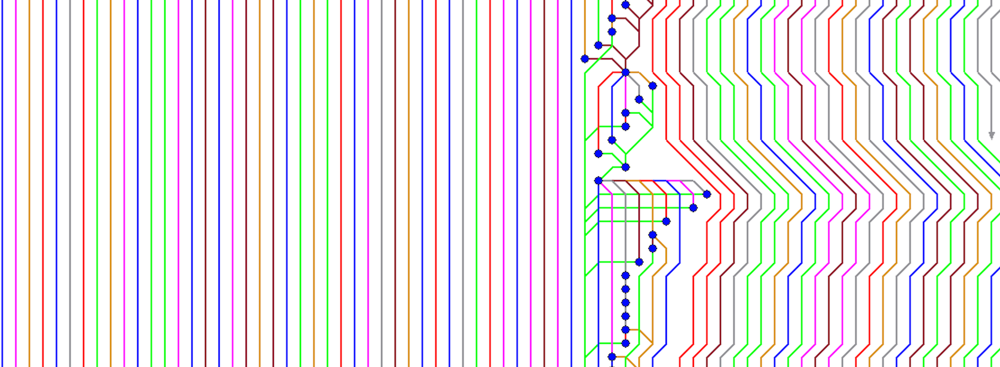

Git Rebase
eric.t.wong@cgi.com
> Once you understand what rebasing is, the most important thing to learn is when not to do it. The golden rule of `git rebase`
is to never use it on public branches.
-[Atlassian](https://www.atlassian.com/git/tutorials/making-a-pull-request)
Terminal/Command Line 😫😫😫

before / after